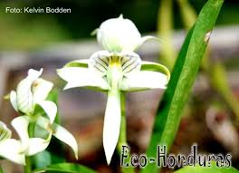
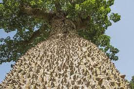
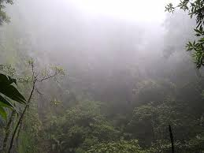
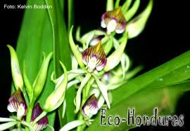
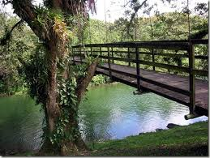

Pagina principal
Animales en Honduras
Parque Nacional la tigra
Biosfera del Rio Platano
Plantas en Honduras
Honduras presenta en sus paisajes una variedad de bosques formados por diferentes tipos de arboles que nos proporciona una gran utilidad para la producción de madera, entre los que mas abundan se encuentran: El pino, roble, laurel, naranjillo, cedro, etc.
Cada tipo de vegetación tiene fauna asociada que le es propia y debido a su diversidad de zonas de vida en el parque se pueden observar gran variedad de especies animales como por ejemplo la gran variedad de aves tropicales entre las cuales se pueden enumerar tucanes, golondrinas, pajuiles, Águilas pescadoras, pavas, diferentes tipos de pericos y loras, pájaros carpinteros, oropéndolas, es posible observar en algunas zonas Quetzales.
Esto en lo que se refiere a aves con lo referente a animales de pelo podemos mencionar Tacuazines, venados, tigrillos, conejos silvestres, gatos cola anillada, guatusas, ardillas, Tapir o Danto y con suerte se pueden observar jaguares, osos hormigueros y monos aulladores.
Honduras es el hogar de una gran variedad de ecosistemas que son el habitat de una inmensa variedad de flora. Más de 10,000 especies de plantas vasculares pueden ser encontradas en Honduras y aún se están contando. Áreas de bosque de pino, humedales, manglares, arrecifes coralinos, bosque tropicales secos, bosque tropicales lluviosos y bosques nublados se encuentran en Honduras. Hay más de 30 áreas de bosques nublados. La Biosfera del Río Plátano, el parque nacional Patuca y la reserva de la Biosfera Tawaka forman - junto a las áreas boscosas del norte de Nicaragua - el área unida más grande de bosque lluvioso después del Amazonas. Actualmente existen más de 100 áreas protegidas en Honduras. Estos parques nacionales, biosferas y reservas de vida silvestre ofrecen experiencias inolvidables y el ambiente perfecto para los amantes de la naturaleza.
Ceiba
La Ceiba, es conocido también, como el árbol sagrado de los Mayas. Sus extensas y profundas raíces representaban para los antiguos mayas, el infra mundo, su tronco, la presencia del hombre sobre la tierra y sus ramas, el cielo. El significado religioso de La Ceiba para los antiguos mayas, solo es comparable con el significado de la cruz para los actuales cristianos. En la actualidad es el árbol nacional de Guatemala, el país centroamericano con mayor número de descendientes indígenas mayas.
La Ceiba es una especie decídua, distribuida ampliamente en las regiones intertropicales del mundo. Su habitat son los bosques húmedos, especialmente los bosques secundarios. Los árboles jóvenes tienen ramas marcadamente verticales con agujones cónicos grandes en el tronco. Los árboles adultos son fácilmente reconocibles por sus troncos enormes sostenidos por grandes gambas tabloides. Estos llegan alcanzar alturas de hasta 40 m y 200 cm. en diámetro. La Ceiba es usada para la producción de plywood, productos de pulpa y papel, cajas, canoas y balsas. El kapok o algodón que producen sus frutos tiene amplia demanda para el relleno de almohadas, asientos de autos y chalecos salvavidas.
Zapatón
Esta es una especie emparentada con La Ceiba. Durante la conquista, los conquistadores españoles debieron comerla para no morir de hambre, para esto cocinaban la fruta hasta dos veces en agua para quitarle el sabor amargo, los nativos al ver esto le dieron un nuevo nombre común, el cual fue : Fruta del viajero. Es una especie de los bosques húmedos, generalmente encontrada a lo largo de los bancos de ríos en áreas de las tierras bajas o valles. Se le encuentra también con mucha facilidad en las zonas de manglares o bosques inundables, por su alta capacidad de soportar suelos anegados. Es reconocible por su corteza café claro y lisa, pero lo mas significativo es su fruto en forma de zapota, pero de gran tamaño (10-30 cm. de largo) y su flor de tamaño muy grande de color rojo fuego.
Indio Desnudo
Especie de amplia distribución de los bosques desiduos y abiertos. Recibe su particular nombres por la caracteriza del árbol de perder su corteza de color rojiza, remplazándola por una nueva. Anteriormente los nativos lo nombraban: indio desnudo, ya que la corteza rojiza se asemeja al color de la piel de los nativos y al perderla el árbol se veía desnudo, pero con la llegada de los primeros turistas, los nativos observaron que después de un par de semanas, a éstos (los turistas) se les cae la piel por la inclemencia del sol y se ponen rojos, por lo que bautizaron al árbol con un segundo nombre común: árbol del turista.
Esta especie se encuentra abundantemente en las áreas de las tierras bajas hasta los 1000 msnm. Florece de febrero a marzo y las flores están dispuestas en racimos asilares y son de color amarillento-verdosa. La corteza es usada por los nativos como un insecticida natural para limpiar de paracitos al ganado vacuno y caballar.
Mahogany / Caoba
Fácilmente identificable en los bosques debido a su únicas ramas en forma de bóveda; las hojas son usualmente claras y de forma asimétrica, el follaje puede notase claramente con el uso de binoculares. Su fruto erguido va de grisáceo a rojizo localizado en la punta de las ramas muy visibles, miden más de 10 centímetros de longitud. Son árboles muy grandes, llegando a alcanzar alturas de 50 metros con ramas y de 25 metros de tronco desnudo; árboles adultos van desde 75 hasta 150 centímetros de diámetro, con alturas desde el centro de apoyo que pueden elevarse hasta 4 metros. La corteza es rojiza-café oscuro con una gran cantidad de profundas hendiduras a lo largo del tronco. Se encuentran desde 0 hasta 400 msnm, en bosque subtropicales secos y húmedos, localizados desde el sur de México hasta el Amazonas. La madera de esta especie es considerada una de las mejor conocidas en el mundo. Usada y exportada principalmente para construir finos muebles y piezas decorativas en todo el mundo.
 